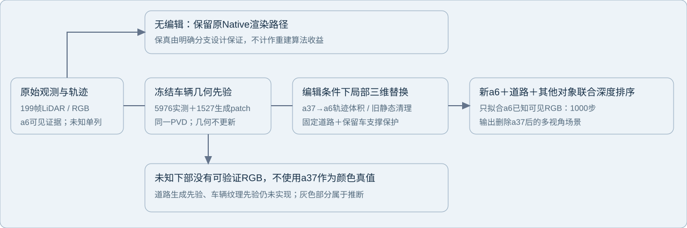
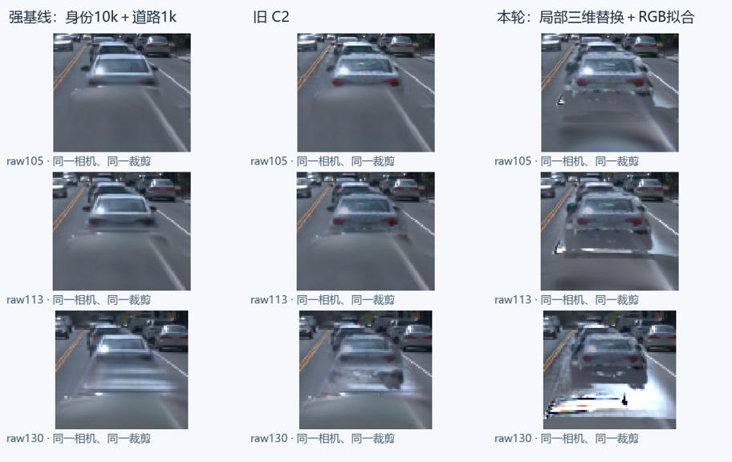

2026-11-04 · scene008 · 只删除a37、保留a6 · task/run: scene008_a37_C2_vehicle_20261104_r1

先验仍是同一个冻结PVD汽车点补全，5976个实测anchors、1527个生成patch以及其中856个缺失下部点均保持。道路仍复用199帧观测恢复的固定分支。变化集中在编辑状态的旧表示替换：先沿真实a37和a6轨迹构建相机无关的局部三维替换体积，再用固定新表面和道路做原生共同深度排序；保留其他车辆在49帧中的原生静态支撑，不使用图像mask贴图。
只对新a6的持久canonical RGB做1000步拟合，监督来自原图严格可见a6像素。原a37像素和新增未知下部不作RGB真值。正式拟合冻结几何、法向、尺度、opacity、时间、原模型、道路和PVD；32步保存/评价＋新进程完整恢复后的2步额外更新单列。

JPEG仅作便捷预览；度量来自原生浮点输出。灰色未观测部位仍是推断外观。新车轮廓、白边、路面残影等缺陷原样展示，不把道路未完成部分记成车辆先验失效。
| 三锚帧同域指标 | 强基线r3 | 旧C2 | 本轮road保护消融 |
|---|---|---|---|
| 可见a6的LiDAR投影深度MAE（米） | 2.345 | 1.729 | 1.066 |
| 可见a6的RGB MAE | 0.03204 | 0.05588 | 0.06107 |
| 固定新增下部域的新a6有效贡献均值 | 无该通道 | 7.0% | 51.5% |
RGB与深度采用相同1964个严格可见像素；RGB共5892通道样本。深度参考是原始a6 LiDAR投影及点足迹，表示已观测数据对齐，不是独立隐藏几何GT。新增下部支撑域来自冻结提案的原生孤立投影，共2188像素；采用率只能说明生成支撑被场景读出，不能当作补全正确率。全部199帧属于BUILD，三个锚帧也不是独立测试。
正式1k使用0.20米道路近邻保护；表格额外给出同一checkpoint下将该保护设为0的零更新消融，其他三维支撑保护保留。该消融使旧道路大核较少挡住新车体，但它并不是又训练过的模型。正式0.20米结果、原始消融配置和全部数值均在原始JSON及运行现场中保留。
无编辑时明确沿用原Native路径，三锚帧与原图渲染逐值相同。这是编辑条件分支的工程设计，不是“同一始终启用的新重建场景”获得质量提升。删除后的新表面是持久三维资产，跨帧共享几何和颜色；旧静态的时间状态保持原样，未冻结整个静态分支，也未加入独立学习阴影层。
完整49帧最终验收、最新checkpoint取回与电源收尾以交付回执为准。本地已有三锚帧度量和图像；远端正式1k检查点已保存。SSH中断不能当作云实例已关机的证明。